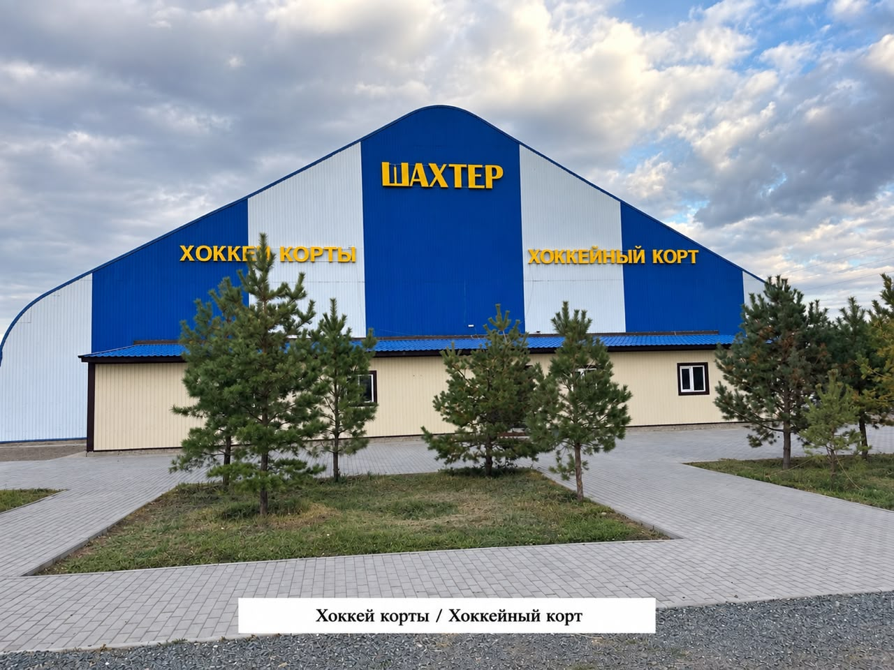
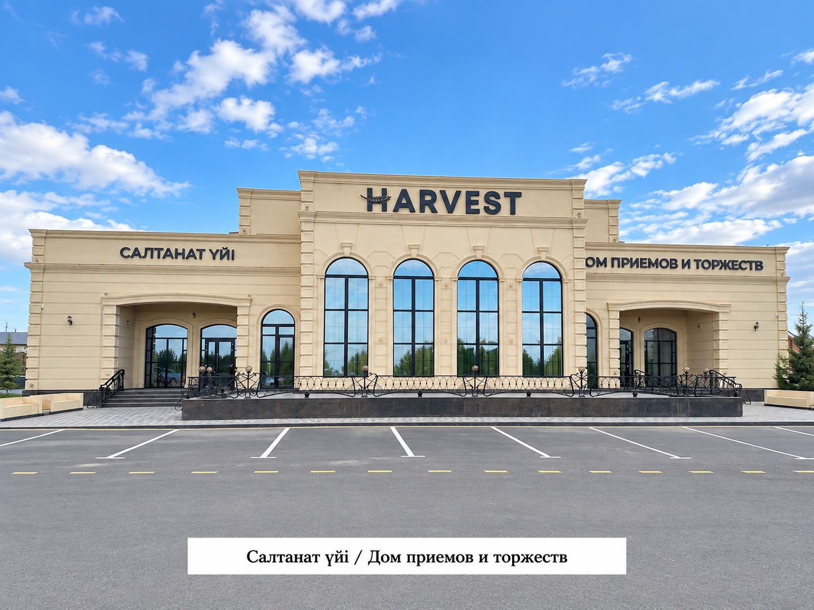
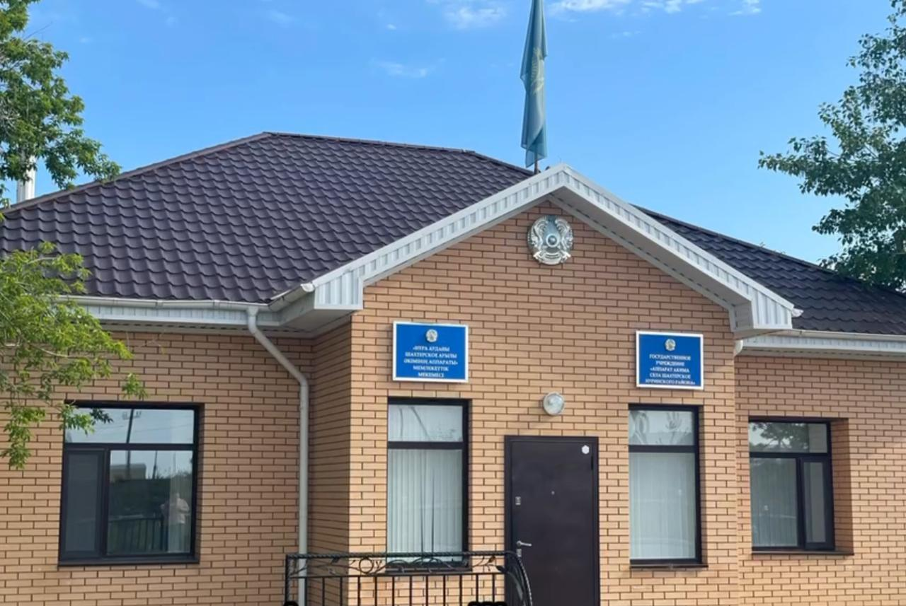
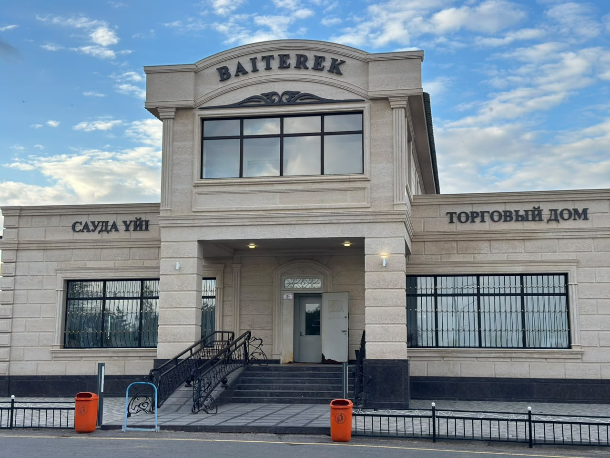
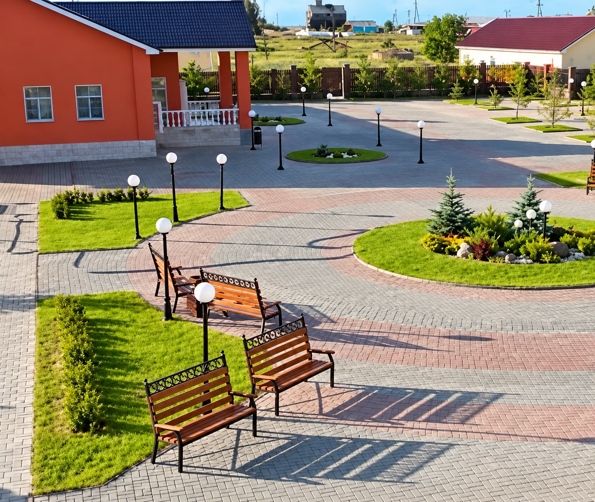
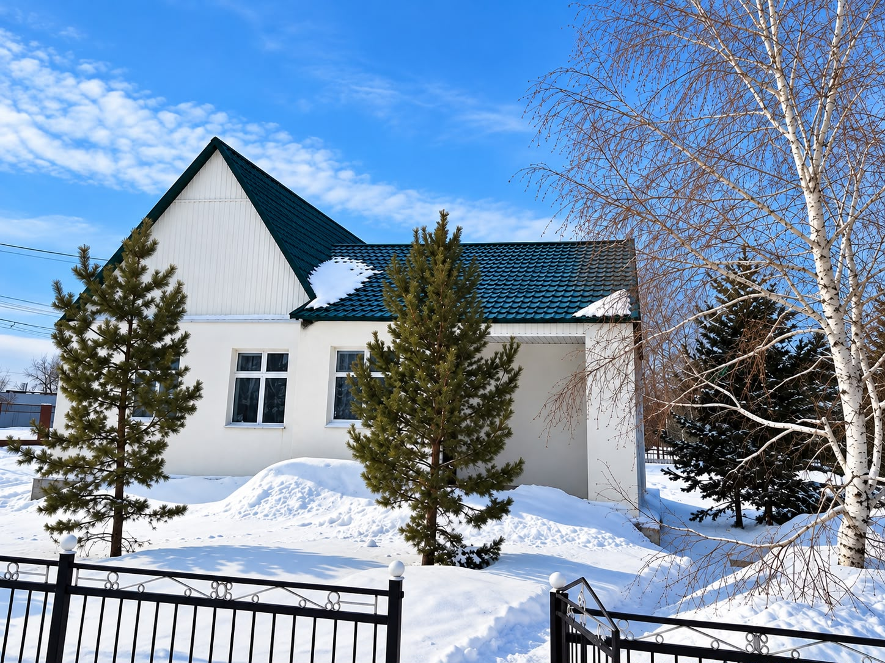
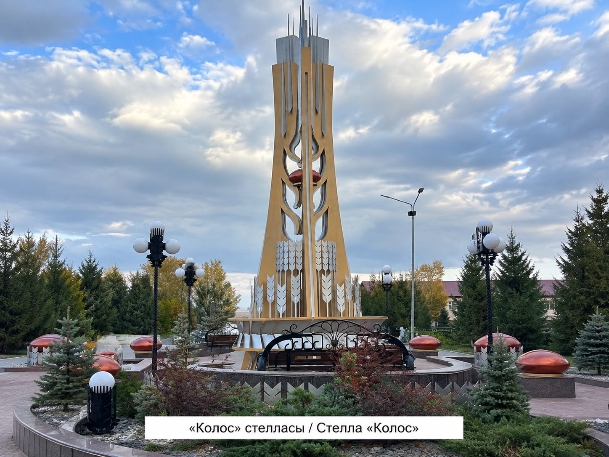

Объекты виртуального музея
13 объектов. Нажмите на карточку, чтобы открыть отдельную страницу с оригинальным фото и полным текстом.

ОБЪЕКТ 01
КГУ «Общеобразовательная школа имени К. Шайменова»
Открыть фотографию и описание →
ОБЪЕКТ 02
Дом культуры села Шахтерское
Открыть фотографию и описание →
ОБЪЕКТ 03
Физкультурно-оздоровительный комплекс (ФОК) села Шахтерского (Нуринский район, Карагандинская область) — это современный, образцово-показательный спортивный объект. Он является ярким примером государственно-частного партнерства: его строительство профинансировали совместно областной акимат и местное ТОО «Шахтерское» во главе с Георгием Прокопом. Спортивный комплекс в селе Шахтерском представляет собой современный многофункциональный объект, построенный для обеспечения городского уровня комфорта в сельской местности. Проект реализован в рамках государственно-частного партнерства при активном финансировании крупного местного аграрного предприятия ТОО «Шахтерское».
Открыть фотографию и описание →
ОБЪЕКТ 04
Крытый хоккейный корт села Шахтерского (Нуринский район, Карагандинская область) — это современное спортивное сооружение ангарного типа, построенное по программе «Ауыл – Ел бесігі» при поддержке ТОО «Шахтерское». Объект спроектирован как полноценная круглогодичная тренировочная база. В зимнее время он функционирует как ледовая арена, а летом трансформируется в универсальную игровую площадку.
Открыть фотографию и описание →
ОБЪЕКТ 05
Это уникальный премиальный объект, построенный на территории крупнейшего аграрного хозяйства региона — ТОО «Шахтерское». Проект интерьера и комплексного благоустройства под ключ реализовала известная казахстанская дизайн-студия Proficenter.
Открыть фотографию и описание →
ОБЪЕКТ 06
Аллея молодёжи в селе Шахтёрском — это благоустроенная парковая зона отдыха, ставшая главным центром общественной и культурной жизни сельского округа. Парк был построен и передан в дар жителям села руководителем ТОО «Шахтёрское» Георгием Георгиевичем Прокопом. Аллея находится в шаговой доступности от спортивного кластера (ФОКа, бассейна и крытого хоккейного корта), образуя единую рекреационную зону села.
Открыть фотографию и описание →
ОБЪЕКТ 07
Аппарат акима Шахтерского сельского округа (Нуринский район, Карагандинская область) — это местный исполнительный орган власти, обеспечивающий жизнедеятельность и развитие села Шахтерского.
Открыть фотографию и описание →
ОБЪЕКТ 08
Объект № 08
Открыть фотографию и описание →
ОБЪЕКТ 09
Крытый плавательный бассейн «Нура» в селе Шахтёрском — это профессиональный спортивный объект, построенный за счет собственных средств ТОО «Шахтёрское» под руководством Георгия Прокопа в рамках социальной ответственности бизнеса. Общая площадь специализированного здания составляет 924 кв. м.
Открыть фотографию и описание →
ОБЪЕКТ 10
Объект № 10
Открыть фотографию и описание →
ОБЪЕКТ 11
Объект № 11
Открыть фотографию и описание →
ОБЪЕКТ 12
Главный офис ТОО «Шахтерское» расположен непосредственно в самом селе Шахтерском и координирует всю производственную, сбытовую и социальную деятельность этого элитного зернового хозяйства.
Открыть фотографию и описание →
ОБЪЕКТ 13